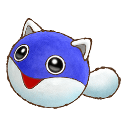

 Mystery Dungeon - Shiren The Wanderer 3
Details
| Playtime | Not Played |
| Last Activity | Never |
| Added | 21/02/2024 18:35:57 |
| Modified | 20/05/2024 22:32:56 |
| Completion Status | Not Played |
| Library | Playnite |
| Source | |
| Platform | Sony PlayStation Portable |
| Release Date | 28/01/2010 |
| Community Score | |
| Critic Score | 69 |
| User Score | 0 |
| Genre | Roguelike RPG |
| Developer | Chunsoft |
| Publisher | Chunsoft Nintendo DS Sega Spike Chunsoft Super Famicom |
| Feature | Single Player |
| Links | |
| Tag | |
Description
The player takes the role of the rōnin Shiren, who travels through thirty areas on his way to the Land of the Golden Condor. The game is turn-based, with all enemies and characters in an area moving whenever the player performs an action, such as attacking or moving. If the player falls in battle, they lose all their progress and are forced to restart from the beginning of the game: to counter-act this, they can choose to store powerful items in warehouses, and pick them up again on further playthroughs; the Nintendo DS release also adds rescue quests, where a player can save other players who have fallen, allowing them to continue from where they left off.
The game was developed with the core concept of repeated play, with players having to improve their items through multiple playthroughs, and was seen as a way for the developers to more fully express the Mystery Dungeon series than had already been done in previous series games which are based pre-existing game worlds that Chunsoft cannot change. The game was released to mixed reviews upon release, with reviewers criticizing the high difficulty and visuals, but praising how the game creates deep gameplay experiences through simple core gameplay concepts. Later, some publications called Shiren the Wanderer among the best in its genre and platform.